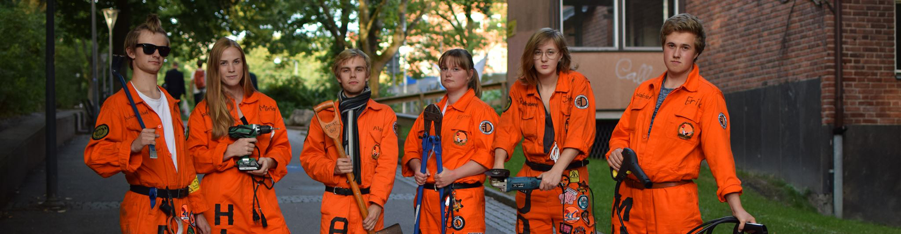
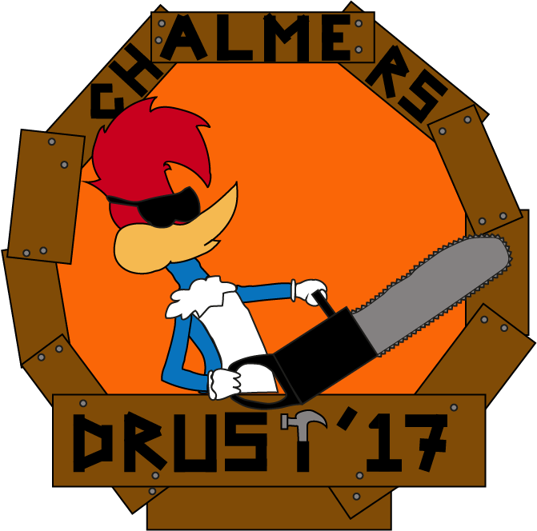

DRust
DRust är Datas rustmästeri. På Wikipedia beskrivs ordet rustmästeri som ”lite av en
vaktmästarförening”.
Det kan ligga något i det. DRust tar främst hand om Datas sektionslokal,
Basen. Vi ser till så
att Basen är välmående, trevlig att vistas i och full med bra saker
tillgängliga för alla
Datateknologer; matlagningsredskap, drickaautomater, flipperspel osv.
Vi har också hand om en
mängd verktyg som teknologer kan låna vid behov. Utöver detta brukar
DRust arrangera filmkör,
flipperkvällar, försäljning under evenemang och annat smått och gott
för Datateknologens trevnad.
Johanna "Jonny" Gudmandsen - Rustmästare
Jonny är "chefen" i DRust. Hon ser till att resten gör vad de ska och spammar en massa mail till
viktiga människor.
På fritiden är hon glutenallergiker och spelar gärna beerpong, alltid för att
vinna! Om någon i DRust inte har gjort
det du vill, snacka med Jonny.
Miriam "Hickan" Degerman - Golddigger
Miriam gillar pengar. Alltså verkligen GILLAR. Om du någonsin vill göra henne glad har du tre säkra
kort att spela på; 1. Ge henne fika / kaffe 2. Ge henne pengar 3. Ge henne något att bokföra.
Hon är mest biff i DRust och den man kallar på när något ska lyftas eller flyttas. Miriam har dessutom
en pojkvän
som hon gärna pussar på, om du inte hittar henne kan du leta upp honom. Hon brukar vara
i närheten.
Erik "Musen" Ljunggren - Lokalchef
Musen är killen med kollen. Har du någon som helst fråga om något är det bara att fråga honom, i alla
fall om det gäller städning, framförallt i Basen. Förutom att vara Lokalchef gillar Musen att spela
brädspel och kubb
och sitter därför också i DLude och iDrott.
Algot "Algot" Nilsson - Flippermerk
Algot är personen som ställer upp i alla väder, han är dessutom den i DRust som bor närmast Basen.
Om du tycker att Basen ska ha fler flipperspel är det vår kära FLippermek du ska snacka med. Han
skickar meddelanden med viktiga flipperpersoner för att se till att du ska få den bästa flipper-
upplevelsen i ditt liv.
Philip "Phax" Svensson - Automatchef
Allt det göddiga du kan hitta i Basens automat har granskats och listats och fixats med av Phax.
Han älskar automaten som om det vore han eget barn och ser till att den funkar även under de mörkaste
av tider (tentaveckor). Det är också han som har koll på alla knep för att få liv i stackaren när den
ger upp, vilket händer några gånger i veckan. Förutom att ha koll på automaten är Phax DRusts egen
vandrande meme. Man måste ju bara gilla grabben!
Emma "Fallet" Stenwreth - Rustasaurus
Fallet är personen du går till om du tappar bort dina sektionsnycklar, hon har nämligen alla. Hon blir
däremot inte så glad om du tappar bort dem för då får hon ha färre i sitt älskade kassaskåp. Fallet
är övrigt-övrigt och eftersom hon gillar orange är hon den inofficiella PR-chefen.Om du ser ett PR
för DRust är det alltså oftast hennes mästerverk. Hon är bäst.